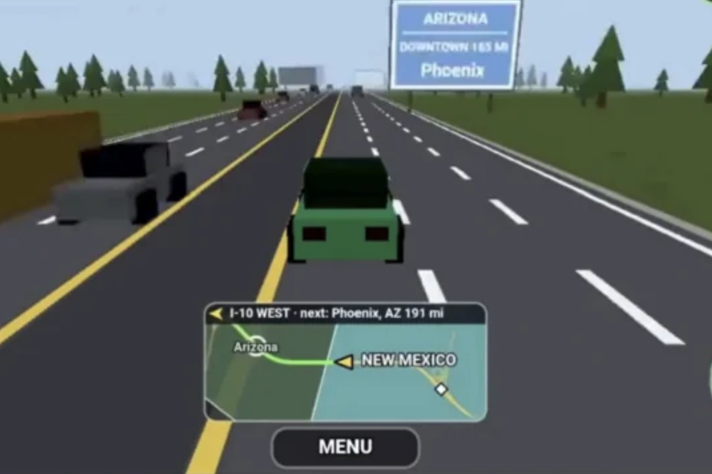
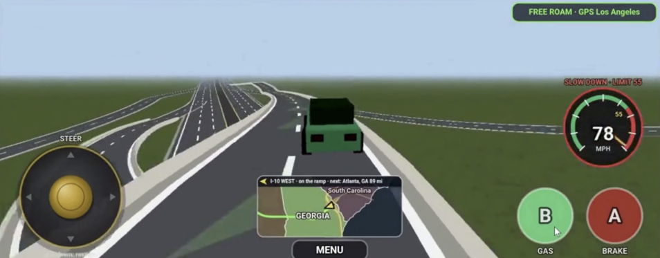
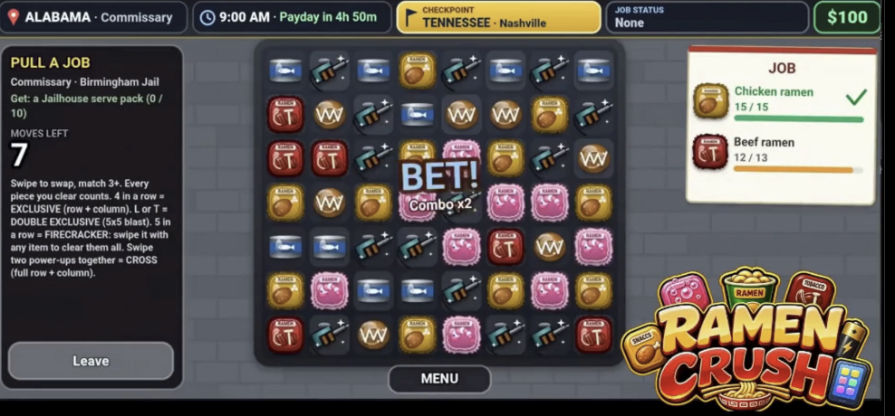
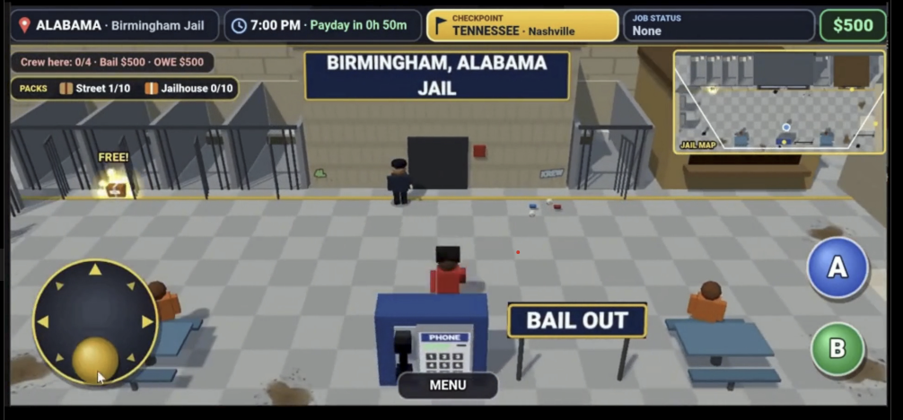
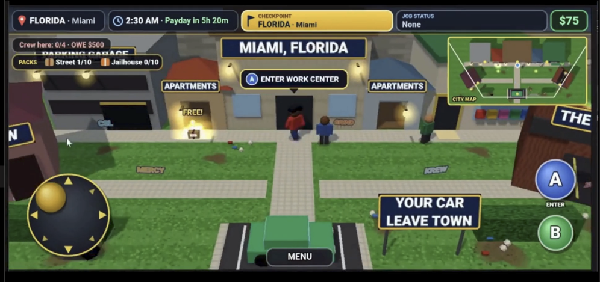
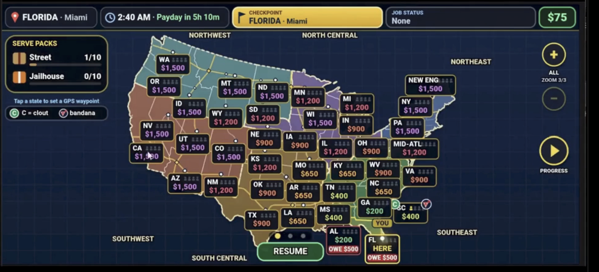
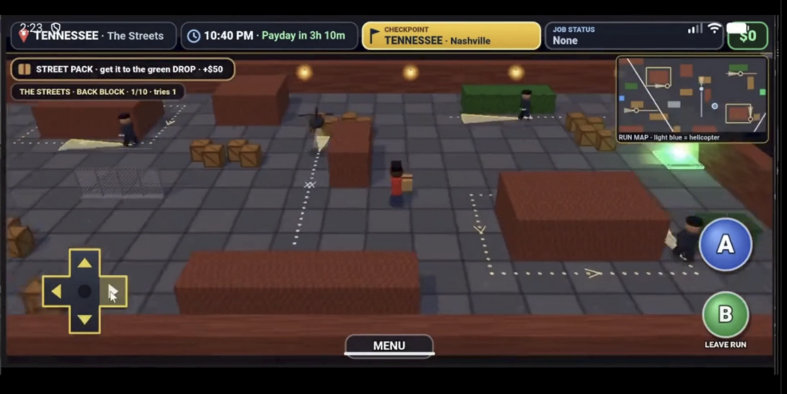

CROSSING
STATE LINES
Explore the 48 contiguous states, take jobs, manage gas money, and find hidden items. Watch your choices: getting busted can land you in jail, where you'll have to work toward bail before getting back on the road.
DOWNLOAD FOR ANDROID — FREE BETAEarly test build · Direct APK download · Not distributed through Google Play

See what you're testing
All images below are from Crossing State Lines gameplay, not concept art.






Every stop brings a new decision.
Explore
Drive across the map, follow GPS routes, and discover items along the way.
Earn
Take jobs, complete missions, and manage your in-game cash.
Survive
Avoid getting busted—or deal with jail, bail, and what you owe.
Download and install the beta
↓ DOWNLOAD CROSSING STATE LINES APK- Tap the download button above on your Android phone.
- Open the downloaded .apk file.
- If Android asks, allow your browser or file manager to install this app from that source.
- Finish installing, launch the game, and turn that installation permission off afterward if you don't need it.
Beta notice: This is an early testing build and may contain bugs, crashes, incomplete features, or gameplay changes. It is distributed directly by Mercy Systems outside Google Play. Only install an APK if you trust its source.
We need beta testers.
Mercy Systems is testing its first Android game, Crossing State Lines. Play it, try different routes and activities, and tell us what should improve. Reports about bugs, crashes, controls, balance, and feature ideas will help guide future development updates.
When reporting a problem, include your Android device model, what you were doing, and what happened. Share feedback through the video or post where you found this beta invitation.
Crossing State Lines — a Mercy Systems game.